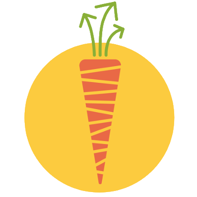
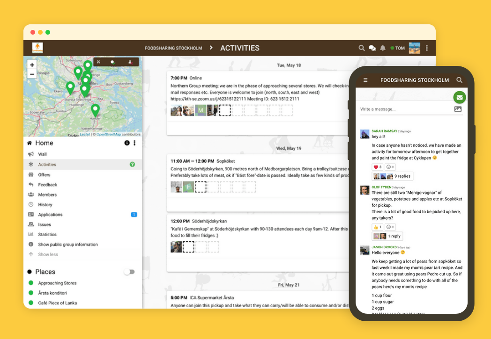

 karrot
a tool for self-organised community organising
June 2022 @ Hacktioncamp

Start a group,
become a community
Karrot is a free and open-source tool for grassroots initiatives and groups of people that want to coordinate face-to-face activities on a local, autonomous and voluntary basis.
It is designed in ways to enable community-building and support a more transparent, democratic and participatory governance of your group.
foodsharing.de
yunity
kanthaus
karrot
karrot: current status
🔢 in numbers:
| groups | active users | activities | food saved | core team |
|---|---|---|---|---|
| ~30 | ~1000 | ~160 / day | 3 tonnes / day | 4 |
💻 remote team
👊 sociopolitical awarenesss
💕 participatory design
💰 small amount of funding, interesting distribution model
karrot: tech
some guy called Dan McKinley said:
"I unapologetically think a bias in favor of boring technology is a good thing, but it’s not the only factor that needs to be considered. Technology choices don’t happen in isolation. They have a scope that touches your entire team, organization, and the system that emerges from the sum total of your choices."
we use: django, django rest framework, postgresql, redis, ... quasar, vue
karrot: where next?
🧑🤝🧑 support more groups doing other things
🤝 group agreements
🍱 breaking the silo
⚔️ improving conflict resolution
👷 group roles
❓more instances? connect groups? fediverse? crowd funding? polls?